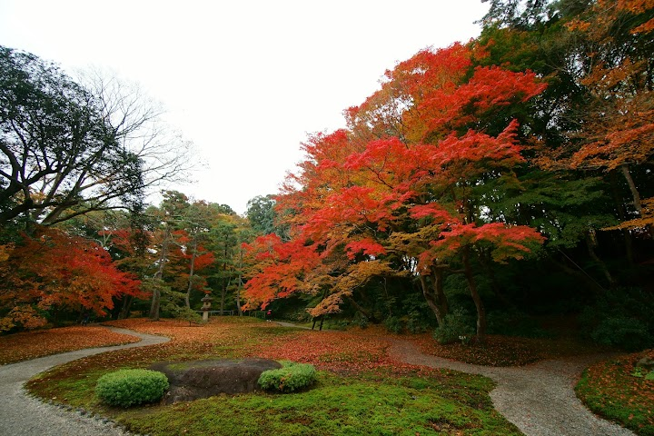
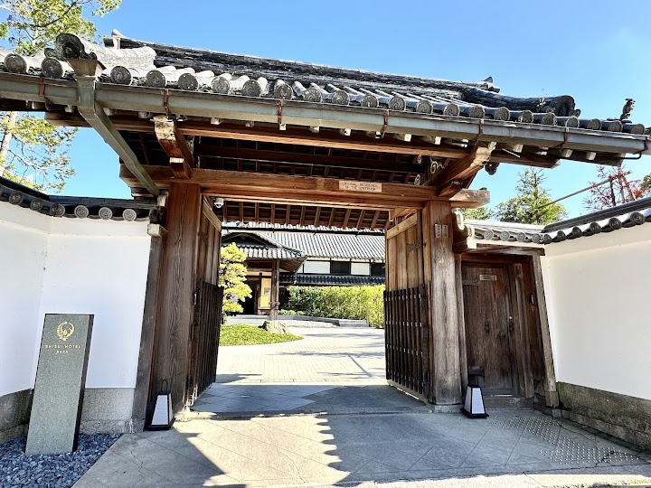
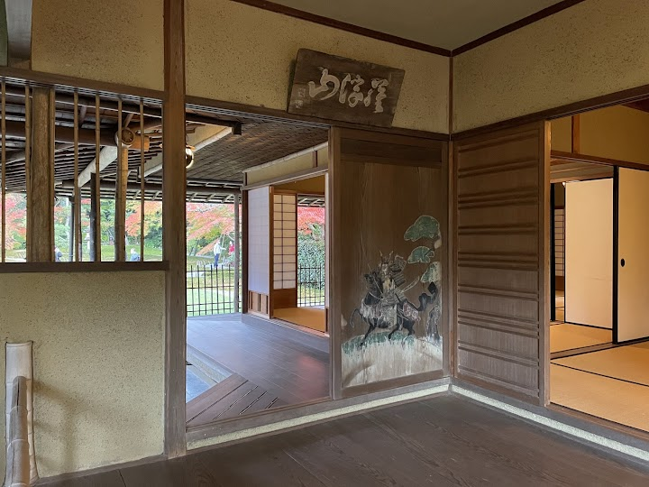
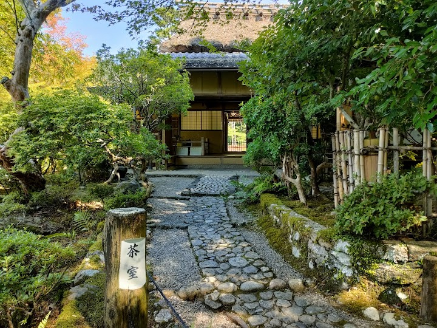
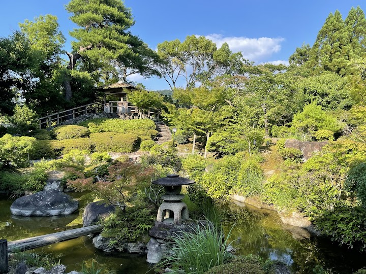

Yoshikien Garden
Yoshikien is a serene classical Japanese garden on a quiet stream, with a wooden teahouse and striking autumn colour. It is free to enter for overseas visitors (one visitor reports no passport check, but carry ID in case) and a calm place to finish your Nara walk.
Open in Google Maps (street view, more photos and reviews there)






Visitor tips on finding it and getting there
What a hidden gem as we almost walked past this garden on our way to lunch after visiting Todai-ji Temple. The admission is free and the garden was very serene where we only saw 5 people at most. You can wonder around the garden on your own but the indoor areas were not restricted. Plan to relax here and reset after a very busy visit to Nara Park.